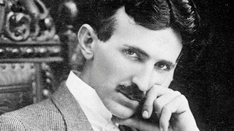

В США уверены, что заслуга изобретения радио принадлежит Николе Тесле, запатентовавшему в 1893 году передатчик, а в 1895-м – приемник. Кстати, в 1943 году его приоритет перед Маркони был признан в судебном порядке. Это связано с тем, что аппарат Маркони и Попова позволял осуществлять только сигнальную функцию, используя в том числе азбуку Морзе. А устройство Теслы могло преобразовывать радиосигнал в акустический звук. Такую конструкцию имеют и все современные радиоустройства, в основе которых лежит колебательный контур.
Сейчас Тесла воспринимается как «Илон Маск XX века». Он изобрёл электрический счётчик, разработал теорию полей, спровоцировав постройку Ниагарской ГЭС, изучил влияние тока на человеческий организм, а ещё придумал фантастический резонатор и, возможно, первый электромобиль.
Серб раньше всех приблизился к созданию приёмника электромагнитных волн. Об этом он заговорил ещё в 1890 году: «Недорогой аппарат позволит владельцу слушать в море или на земле музыку или песни, речь политического лидера, выдающегося учёного или проповеди священника, находящегося на огромном расстоянии». А в 1893-м Тесла выступил с докладом «О свете и других высокочастотных явлениях» в Институте Франклина в Филадельфии. Там он описал приёмник и передатчик, антенну, заземление, контур, катушку индуктивности, конденсатор и даже репродуктор, придуманный им ещё в Будапеште.
В общем, это было почти готовое радио. Казалось бы — вот оно, открытие, патент и мировая слава. Но Тесла не погнался за мелкой рыбешкой и не стал акцентировать внимание на изобретении. Беспроводная связь была лишь частью его фантастического, но, кажется, вполне осуществимого замысла — передавать электроэнергию по всему миру, не используя провода.